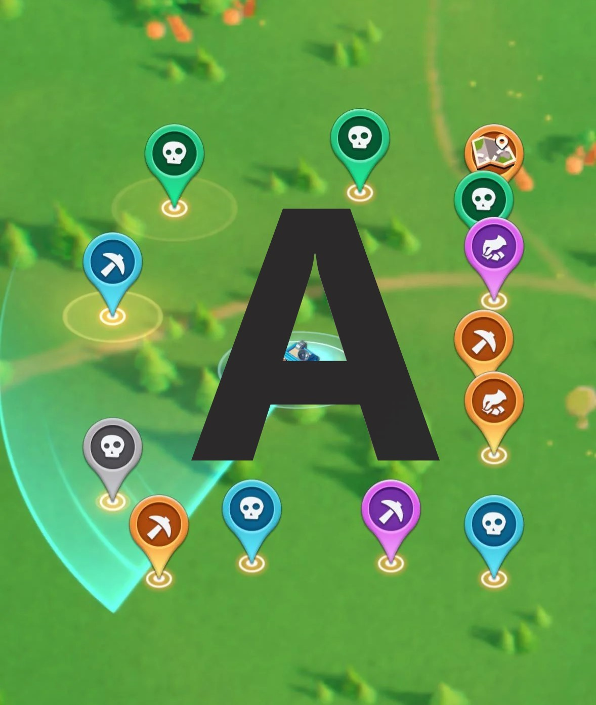
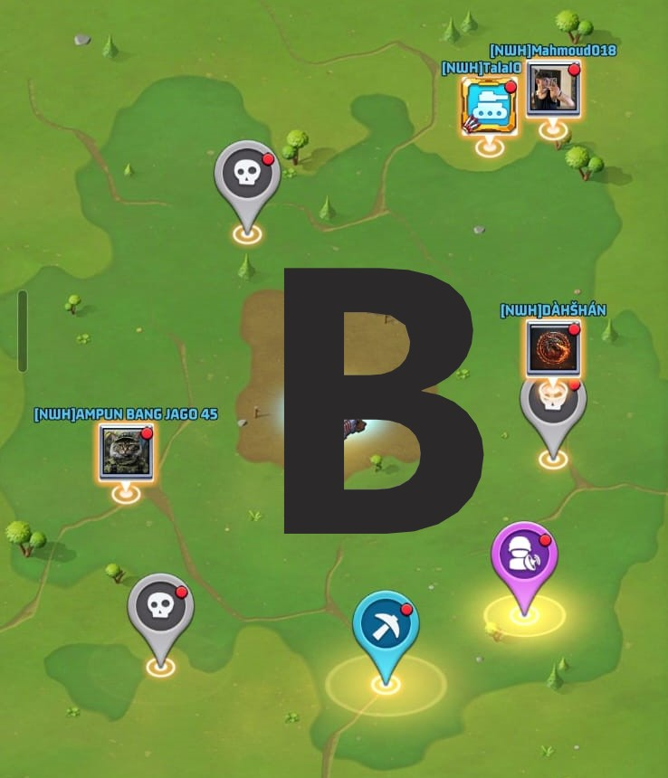

[NWH] Night Watch
📡 Complete Radar Missions Guide
How to maximize your Duel VS points without losing a single mission
How to maximize your Duel VS points without losing a single mission
Radar Missions are daily missions that appear on the map and grant you various rewards. They're one of the most important point sources in the game if used the right way.
Why do they matter? Because they give you:
In this guide, you'll learn how to manage Radar Missions smartly instead of collecting them randomly and losing valuable points.
Assalamu alaikum wa rahmatullahi wa barakatuh,
We've noticed some members collecting Radar Missions before their designated day. Please pay attention to the correct method:
A: At first, the Radar Mission looks like Image A. Complete the mission normally.
B: After completing it, it switches to the state shown in Image B, with a red dot 🔴 appearing — meaning it's ready to collect.
❌ Don't tap it or collect it outside a Radar day.
✅ Leave all missions in this state (with the red dot) until the Radar day arrives, then collect them to get VS points.
Important reminder: completing the mission is fine — but collecting the reward must be saved for the Radar day only.
The Radar Mission mechanic follows four simple stages:
Every Radar Mission goes through just two states, and it's essential to tell them apart:


❌ Most players tap the mission the moment the red dot appears and collect the reward without thinking.
The result: they lose the Duel VS points that would have counted if they had waited for the right collection day.
This is one of the most important points in this guide. Always leave at least one empty slot in your Radar Mission stock.
Why? Because once the mission counter hits the max (e.g. 35/35), the timer for new missions stops ❌, so you lose out on entire missions that would have appeared.
Example weekly schedule for managing Radar Missions (adjust to your server's Duel VS calendar):
| Day | Action |
|---|---|
| Sunday | 🟡 Prepare |
| Monday | 🟢 Collect |
| Tuesday | 🔵 Stack |
| Wednesday | 🟢 Collect |
| Thursday | 🔵 Stack |
| Friday | 🟢 Collect |
⚠️ Adjust the days according to Days 1, 3, and 5 of your server's Duel VS schedule.
Many players don't know this: some Radar Missions consume Stamina. So you can double the benefit:
This way you get Arms Race points from the Stamina used, then Duel VS points when you collect later — double the value 💪.
When you're in an alliance, other members can help complete your mission for you, so the red dot appears automatically without you spending any Stamina.
Yes, each mission has its own countdown timer. If it isn't completed within that time, it disappears automatically.
Yes, once the stock is completely full (e.g. 35/35), the timer stops. That's why we recommend always leaving one empty slot.
Because staying at 34/35 keeps the new mission spawn timer running, while 35/35 stops it and you lose missions that would have been added.
Yes, as long as it stays in the "finished with red dot" state and isn't collected, you can delay collecting it until the most suitable Duel VS day.
This is a number you should never miss 👇
Each single Radar Mission gives you roughly 25,000 points in Duel VS when collected on the right day.
By following the stacking strategy explained in this guide, you arrive at the collection day with:
Total: 80 missions ready to collect at once.
🚨 About two million points in a single day — that's what you lose if you collect your missions randomly instead of stacking and waiting for the correct Duel VS day!
Radar Missions aren't just ordinary tasks — they're a strategic tool for maximizing your Duel VS and Arms Race points. The golden rule: keep completing them continuously, only collect on Radar day, and always stay at 34/35.